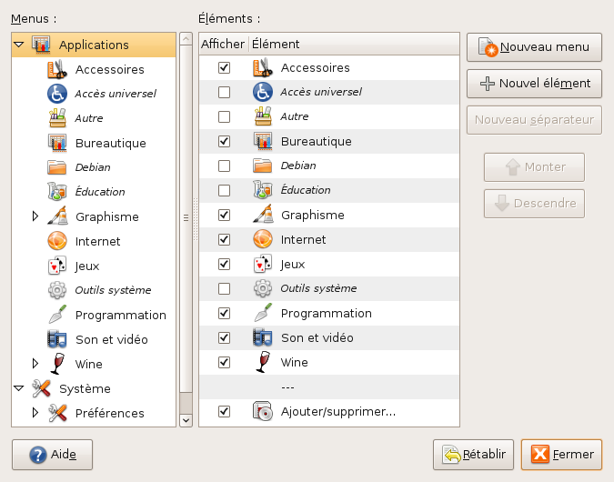
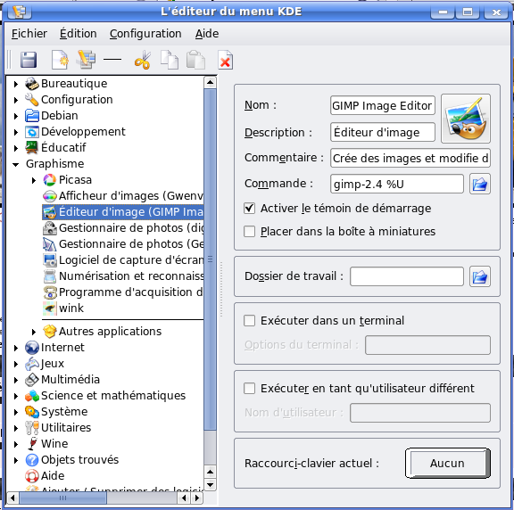
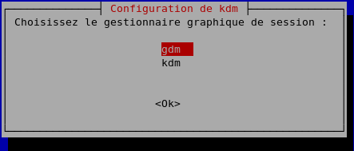
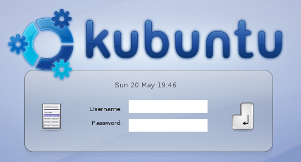
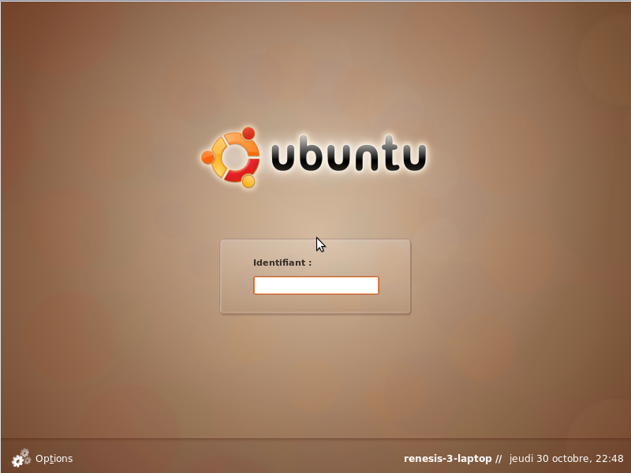
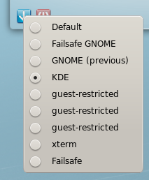
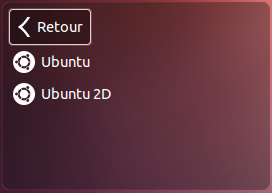

Si vous avez cliqué ici, c'est que vous avez certainement installé (k)Ubuntu sur votre ordinateur. Comme vous le savez certainement (du moins, si vous avez suivi le tutoriel de M@teo21), ceux-ci utilisent comme interface graphique ce que l'on appelle un gestionnaire de bureau. Et il en existe plusieurs (Gnome, KDE, XFCE, etc.) ! Chacun a son style, son organisation, etc. et il peut être intéressant d'en avoir plusieurs, pour comparer, ou tout simplement pour changer de temps en temps. :)
Eh bien dans ce tutoriel, nous allons voir trois choses à propos de ces fameux gestionnaires de bureau :
ce que c'est plus exactement ;
comment en installer un, et surtout comment en installer plusieurs (Gnome, KDE, XFCE entre autres) ; de même, quelques astuces pour que cela soit fait "proprement", vous verrez pourquoi par la suite ;
et comment le désinstaller proprement, car si tel était votre désir, ça peut (enfin, pouvait) poser quelques petits problèmes. :-°
Allez, ça suffit pour l'intro, passons aux choses sérieuses ! :D
Prérequis : il est préférable d'avoir lu le tuto de M@teo21 sur Linux pour mieux comprendre le tuto et les commandes, même si ce n'est pas forcément nécessaire pour arriver à nos fins. ;)
C'est vrai, c'est quoi au juste ? Il n'y avait pas ça sous Windows !
Effectivement, on ne retrouve pas de gestionnaire de bureau sous Windows, enfin cette notion, car il y en a bien un. Mais Microsoft n'en propose qu'un par défaut, différent selon les versions.
Alors, qu'est-ce qu'un gestionnaire de bureau ? Eh bien c'est la partie émergée du système ! On parle aussi d'environnements de bureau ou d'interface graphique. Il s'agit donc en fait de ce que vous voyez en ce moment. :) Sans cette interface graphique, vous seriez obligés d'utiliser Linux en console.
Le gestionnaire de bureau met donc à votre disposition différents outils pour utiliser votre OS, tels que :
un bureau, avec un arrière-plan, des icônes, etc. ;
une ou plusieurs barres de menus avec les panneaux associés, vous permettant de voir votre menu qui regroupe en général vos logiciels, mais aussi d'afficher l'heure ou les fenêtres ouvertes ;
un gestionnaire de fenêtres, qui permet d'entourer les applications ouvertes, avec des boutons pour les fermer, les agrandir, les réduire, les "enrouler" (avec xfce), les garder présentes sur tous les bureaux (xfce encore), etc. ;
un gestionnaire de session au démarrage, pour s'identifier sur la machine ;
un splash : vous savez, la barre qui permet de voir le chargement d'Ubuntu au tout début du démarrage (juste après avoir appuyé sur le bouton de mise sous tension) ;
etc.
Je ne vous apprends pas grand-chose, finalement.
Cependant, on fait parfois l'amalgame entre système d'exploitation, environnement de bureau, et gestionnaire de fenêtres. Il est important de faire la distinction, pour savoir de quoi on vous parle, sur les forums par exemple. ;)
Je vais donc commencer par expliquer l'installation de KDE, mais ne vous inquiétez pas car je ferai de même pour les autres gestionnaires de bureau, les manips sont très similaires. ;)
Alors, comment installer KDE ?
Une des commandes les plus connues est celle-ci :
sudo apt-get install kubuntu-desktop
Euh, il est où, le problème ? Ce n'est pas ça qu'on cherche à faire ? :euh:
Si, si, mais le problème, c'est que comme les programmes sous Ubuntu sont compatibles avec Kubuntu (et avec toutes les autres versions de Linux, normalement), vous allez vous retrouver avec les programmes de KDE sous Ubuntu, et vice-versa. Vous aurez par exemple Konqueror sous Ubuntu alors que vous avez déjà Firefox. De même que vous aurez Pidgin sous Kubuntu alors qu'il y a Kopete.
Bref, c'est le bazar complet (presque aussi bien que ma chambre :-° ).
Je vais donc vous présenter une astuce pour régler ce problème par la suite, mais avant ça, je vais également vous présenter une autre façon d'installer KDE.
En effet, il est possible d'installer le strict minimum pour faire tourner KDE. C'est-à-dire juste ce qu'il faut pour avoir KDE, mais sans tous les logiciels associés, vous n'aurez donc pas Konqueror, Amarok, Adept, etc. :
sudo apt-get install kde-core
Voilà : vous n'avez que KDE, vous n'avez plus qu'à installer vos programmes préférés, ou juste utiliser les programmes Ubuntu, toujours présents. :)
Les paquets équivalents pour les autres gestionnaires de bureaux sont :
pour Gnome : ubuntu-desktop et gnome-core ;
pour XFCE : xubuntu-desktop et xfce4.
Faire cohabiter plusieurs gestionnaires de bureau
Mais moi, je veux utiliser KDE (Gnome, ou XFCE ou les trois) avec leurs logiciels ! Comment on fait ? :(
Comme je vous l'ai expliqué plus haut, ça pose un petit problème, sauf si vous êtes bordéliques, mais dans ce cas, c'est vous que ça regarde. ^^ Va falloir faire en sorte que les gestionnaires "cohabitent" sans se gêner. En fait, il n'y pas de commande qui fasse cela automatiquement, on va donc le faire manuellement, et ça va être un peu fastidieux. Mais on ne fait pas d'omelette sans casser d'œufs. Et ce n'est pas vraiment difficile, juste un peu long et fastidieux.
Explications
Qu'est-ce qu'on fait pour les faire cohabiter, alors ?
On édite les menus manuellement.
J'explique pourquoi : le principe, c'est de "cacher" les applications des menus. Faites un test : cliquez droit sur le menu Applications (ou le menu K sous KDE), puis cliquez sur Éditer les menus, vous vous retrouvez avec ce menu sous Gnome :

ou avec celui-là sous KDE :

Pour Gnome : cliquez sur Accessoires par exemple, puis décochez l'application que vous voulez. Une fois cela fait, cliquez à nouveau dans le menu Applications -> Accessoires, l'application en question n'est plus affichée !
Pour KDE : cliquez sur Graphisme, déroulez la liste des applications graphiques et choisissez un programme, puis cliquez sur l'icône Supprimer. L'application aura également disparu, vous pouvez vérifier. ;)
Ces applications ne sont pas désinstallées, elles ne sont juste plus accessibles depuis le menu. Donc, en procédant ainsi, on peut cacher les applications de KDE sous Ubuntu. Ça fait tout de suite plus propre.
Et il va y en avoir des applications à cacher ! Allez, c'est parti. :diable:
L'installation
Allez, on commence.
Étape 1
Première commande, on installe kubuntu-desktop :
sudo apt-get install kubuntu-desktop
On vous demande ensuite quelle interface graphique de session vous voulez utiliser, autrement dit, si vous voulez choisir votre identifiant sous Gnome ou KDE (lorsque vous rentrez votre pseudo et votre mot de passe). Choisissez gdm pour Gnome ou kdm pour KDE.

L'installation et le téléchargement peuvent être un peu longs, et c'est normal vu qu'il y a pas mal de paquets à ajouter. Une fois fait, redémarrez votre ordinateur (pensez à imprimer ce tuto pour pouvoir le suivre si vous pensez que cela est nécessaire).
Vous voilà face à votre nouveau (ou non en fonction de ce que vous avez choisi) programme de login.
KDM :

GDM :

Sous KDM, il faut cliquer sur le bouton de gauche, puis choisir "Session Type" > "Le gestionnaire de bureau que vous voulez" afin de choisir le gestionnaire de bureau que vous allez utiliser ; sous GDM, il faut cliquer sur Options en bas à gauche, et choisir Sélectionner une session .... En images...

Entrez ensuite votre pseudo ainsi que votre mot de passe. Si c'est en anglais, ce n'est pas grave : allez dans le support linguistique et sélectionnez la langue française par défaut. Il va alors télécharger et installer (oui, encore, mais promis, c'est la dernière :lol: ) les traductions.
Eurêka ! Vous voilà enfin avec Kubuntu ! :D Eh oui, et là comme vous pouvez le constater dans les menus, c'est bien le bazar, je ne vous ai pas menti. ^^ Mais on va régler ça.
Étape 2
Il nous reste le plus gros à faire : retirer les programmes de Gnome du menu de KDE, et vice-versa. Bien entendu, si vous ne pouvez vous passer d'un programme Gnome, vous pouvez le laisser sous KDE (Firefox par exemple ; dans l'autre sens, Amarok est bien apprécié sous Gnome bien qu'il soit prévu pour KDE à l'origine, par exemple).
Pour vous faciliter la tâche, je vous ai listé les applications par défaut des différents environnements (c'est-à-dire les applications "livrées" avec Ubuntu, Kubuntu et Xubuntu). Les catégories sont en gras. Il s'agit ici de la version 8.04, j'essayerai de mettre la liste à jour en fonction des nouvelles versions. ;)
Gnome
KDE
XFCE
Accessoires >
Analyseur Bluetooth Analyseur de disque Calculatrice Capture d'écran Dictionnaire Éditeur de texte Gérer les tâches d'impression Mot de passe et clés de chiffrement Notes Tomboy Outil de recherche Tracker Table des caractères Terminal
Bureautique >
Messagerie d'Evolution Présentation OpenOffice.org Tableur OpenOffice.org Traitement de texte OpenOffice.org
Messagerie d'Evolution Navigateur Web Firefox Pidgin Softphone Ekiga Terminal Serveur Client Transmission Visionneur de bureaux distants
Jeux >
Blackjack Cinq ou plus Gnométris lagno Jeu d'échec Klotski Mahjjong Mines Nibbles Puissance 4 Robots Same GNOME Solitaire AisleRiot Solitaire FreeCell Sudoku Tali Tetravex
Son et vidéo >
Enregistreur de son Extracteur de CD audio Gravure de disque Brasero Lecteur de musique Rythmbox Lecteur de vidéo
Bureautique >
Kontact - Gestionnaires d'informations personnelles Dessin - OpenOffice.org Fax address book HPLIP Fax Utility Karm - Chronomètre Individuel de tâches Knotes - Éditeur de petites notes KPDF - Afficheur de PDF Présentation OpenOffice.org Tableur OpenOffice.org Traitement de texte OpenOffice.org
Graphisme >
digiKam - Gestionnaire de photos GwenView - Afficheur d'images Kooka - Numérisation et reconnaissance de caractères KSnapShot - Logiciel de capture d'écran
Internet >
Akregator - Lecteur de flux RSS KNetworkManager - Gestionnaire de réseau Konqueror - Navigateur Web Kontact - Gestionnaire d'informations personnelles Konversation - Client IRC Kopete - Messagerie Instantanée KPPP - Connexion Internet par modem Krdc - Connexion à un bureau distant Krfb - Partage de bureau KTorrent - Client BitTorrent
Multimédia >
Amarok - Lecteur Audio K3b - Gravure de CD et DVD Kaffeine - Lecteur multimédia KMix - Console de mixage
Système >
Desktop Effects Dolphin - Gestionnaire de fichiers Gestionnaire Adept - Gestionnaire de paquets Hardware Drivers Manager HPLIP Toolbox - Printer Toolbox kbluetooth - Services Bluetooth KCron - Planificateur de tâches Keep - Sauvegarde du système KInfoCenter - Centre d'informations Konsole - Terminal kSystemLog - System Logs Viewer Printing Surveillance du système - Indicateurs de performances
Utilitaire >
Ark - Outil de manipulation d'archives Assitant KDE de travail collaboratif Karm - Chronomètre Individuel de tâches Katapult - Lancer pour KDE Kate - Éditeur de texte avancé KJobViewer - Tâches d'impressions Kmag - Loupe d'écran KMouseTool - Clic de souris automatique KNotes - Éditeurs de petites notes Kvkbd - Clavier virtuel SKim - Méthode de saisie de texte SpeedCrunch - Calculator Strigi
Paramètres >
Gestion des paramètres de XFCE Configuration de la méthode de saisie SCIM Fenêtre de connexion Impression Imprimante par défaut __________
Accessoires >
AppFinder Calculatrice Gestionnaire de fichiers Thunar Gérer les tâches d'impression Mousepad Renommer en masse Table des caractères Terminal
Bureautique >
Abiword Calendrier Tableur Gnuméric
Infographie >
GIMP Ristretto : Visualiseur d'images
Jeux >
Blackjack Cinq ou plus Gnométris lagno Jeu d'échec Klotski Mahjjong Mines Nibbles Puissance 4 Robots Same GNOME Solitaire AisleRiot Solitaire FreeCell Sudoku Tali Tetravex
Multimédia >
Gravure de disque Brasero Lecteur vidéo
Réseau >
Messagerie internet Pidgin Messagerie Thunderbird Navigateur Web Firefox Transmission BitTorrent Client Visionneur de bureaux distants __________
Système >
Ajouter/Supprimer Autorisations Date et heures Dossiers partagés Gestionnaire de mise à jour Gestionnaire de paquet Synaptic Moniteur système Pilotes de périphériques Réseau Services Sources de mise à jour Support linguistique Utilisateurs et groupes
Il est possible que vous ayez également d'autres applications : dans ce cas, laissez-les dans les deux ou trois sessions. ;)
Hé ! Hé ! Attends ! Pourquoi j'ai l'écran de démarrage de Kubuntu ? Je ne le veux pas, je veux avoir / garder celui de Ubuntu ! (Ou vice-versa)
Ah oui, j'allais oublier : l'usplash (souvenez-vous, on en a parlé au début du tuto) ! Pour choisir l'usplash, il faut taper cette commande :
Puis on vous demande de choisir l'usplash que vous voulez utiliser. Regardez bien dans les noms farfelus que l'on vous propose, vous avez ubuntu-theme dans l'un et kubuntu-theme dans l'autre. Je pense que vous saurez vous débrouiller pour choisir. ;)
D'ailleurs, je donne un bonus à ceux qui savent chercher : il existe un paquet nommé usplash-switcher qui permet de passer d'un splash à un autre facilement par l'interface graphique (car vous pouvez également personnaliser le splash).
N.B. : Remontez un peu au-dessus pour voir les paquets équivalents de kubuntu-desktop pour installer Gnome ou Xfce.
Je vais maintenant vous montrer comment on désinstalle un gestionnaire de bureau, et bonne nouvelle, ce n'est pas du tout compliqué ! :D
On va juste commencer par installer un paquet qui se nomme deborphan. Celui-ci permet de supprimer les paquets orphelins, c'est-à-dire les paquets qui ne servent plus à rien.
Comment ça, les paquets qui ne servent plus ? o_O
Cela est lié aux dépendances. Lorsque vous installez un paquet, votre système va automatiquement aller chercher tous les autres paquets nécessaires pour le faire fonctionner. Par exemple, si vous installez le jeu lbreakout2, vous allez demander à installer le paquet du même nom, et Synaptic (ou la commande apt-get) vous proposera alors automatiquement d'installer le paquet lbreakout2-data nécessaire au premier paquet.
Or, lorsque vous désinstallez, vous ne désinstallez que lbreakout2, il vous reste donc le paquet lbreakout2-data qui ne vous sert plus à rien. Lorsqu'il ne s'agit que d'un seul logiciel, ce n'est pas gênant, mais pour désinstaller toute une suite de logiciels, ce n'est pas la même chose. :-° Heureusement, le paquet deborphan se charge de ça. :)
Pour installer deborphan, tapez les lignes suivantes dans un terminal :
sudo apt-get install deborphan
Ensuite, il suffit juste de taper deborphan qui vous listera les paquets inutilisés, et de régler l'affaire avec un apt-get autoremove --purge *nom_du_paquet*. Il existe également une interface graphique pour ce paquet si vraiment vous êtes allergiques à la console : demandez à Google. Vous pouvez également lire la doc avec man deborphan, le manuel c'est un peu comme le mode d'emploi de la commande choisie en fait. ;)
Pour notre désinstallation, il suffit de taper ces 3 lignes dans un terminal (une par une, bien entendu) :
Et voilà, vous avez maintenant Gnome, KDE, et/ou XFCE installés sur votre machine, et ce, du moins je l'espère, "proprement". :) Vous pouvez tout aussi bien désinstaller ces gestionnaires de bureau.
Sachez qu'il en existe aussi bien d'autres, vous connaissez maintenant la méthode pour le faire proprement. ;)